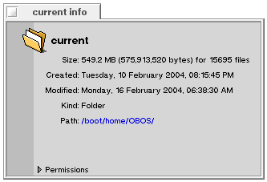
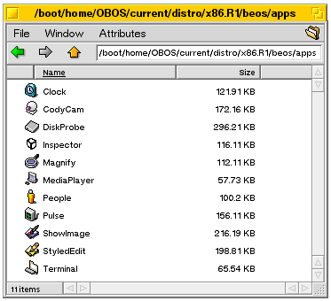
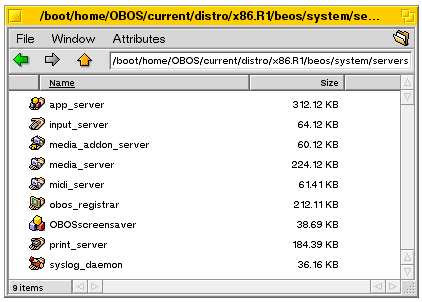

               <html>
                    <!-- Heading -->
                    <head>
                         <title>OpenBeOS Project - Displaying Newsletter</title>
                         <meta name="Keywords" content="OpenBeOS, BeOS, OBOS, operating system, developer">
                         <meta http-equiv="Cache-Control" content="no-cache">
                         <meta http-equiv="Pragma" content="no-cache">
                    </head>
                    <!-- / Heading -->
                    <!-- Body -->
                    <body bgcolor="#ffffff" leftmargin=5 topmargin=5>

                         <!-- Top Table -->
                         <table width="100%" cellspacing=0 cellpadding=0 border=0 bgcolor="#a7afbb">

                              <!-- Logo -->
                              <tr valign="bottom"><td></td></tr>
                              <!-- / Logo -->

                              <!-- Slogan -->
                              <tr valign="top">
                                   <td width="100%">
                                        
                                   </td>
                              </tr>
                              <!-- / Slogan -->

                              <tr><td colspan=2></td></tr>

                         </table>
                         <!-- / Top Table -->

                         <!-- Main Table -->
                         <table width="100%" cellspacing=0 cellpadding=0 border=0>
                              <tr valign="top">


                                   <td width=1 bgcolor="#dddddd"></td>
                                   <td width=16 bgcolor="#ffffff">&nbsp;</td>

                                   <!-- Content -->
                                   <td width="100%">
                                        <font size="-1" face="Verdana, Arial">

     	    	<table width="99%" cellspacing=0 cellpadding=0 border=0>
           	     <tr>
                	     <td height="12"><a name="top">&nbsp;</a></td>
               	</tr>
               	<tr>
                         <td>
                    	     
                              
                              <font face="Verdana, Arial" size="+2" color="#331111">Displaying Newsletter<div align="right"><font size="-1"><a href="index.html">Newsletter Archive</a></font></div></font>
                              
                         </td>
               	</tr>
               	<font size="-1" face="Verdana, Arial">

               <tr>
                    <td><font color="#113355" face="Verdana,Arial"><b>Issue 52, 25 Mar 2004</b></font>

                    </td>
               </tr>
               <tr><td height="6"></td></tr>
               <!-- Newsletter Header Links -->
               <tr>
                    <td bgcolor=#eeeeee>

                         <table width="100%" cellspacing="2" cellpadding="0" border="0">
                              <tr valign="top">
                                   <td bgcolor="#f6f6f6">
                                        <font face="verdana,arial" size="-1">
                                        <br><br>&nbsp;&nbsp;<b><font color="">In This Issue:</font></b>
                                        <ul type="square">
                                             <li><a href="#184">How to "Get OBOS"</a>&nbsp; by Sikosis</li><li><a href="#185">Round Rects Are Here</a>&nbsp; by Michael Phipps</li><li><a href="#186">The Best Things in Life are Free (or close to it)</a>&nbsp; by Michael Phipps</li>
                                        </ul>
                                        </font>
                                   </td>
                              </tr>
                         </table>

                    </td>
               </tr>
               <!-- / Newsletter Header Links -->

		     <!-- Newsletter Article (ID:184) -->
               <tr>
                    <td height="30"></td>
               </tr>
               <tr>
                    <td>
                         <a name="184">&nbsp;<br></a>

                         <table width="100%" cellspacing="0" cellpadding="0" border="0">
                              <tr><td bgcolor="#999999" colspan="2" height="2"></td></tr>
                              <tr>
                                   <td height="32" width="80%">
                                        <b><font face="verdana,arial" color="#331111">How to "Get OBOS"</font></b>
                                   </td>
                                   <td align="right"><font size="-1">by <a href="mailto:brie@g24.com.au">Sikosis</a></font>&nbsp;</td>
                              </tr>
                              <tr><td bgcolor="#999999" colspan="2" height="3"></td></tr>
                              <tr><td colspan="2" height="15"></td></tr>
                         </table>

                    </td>
               </tr>
               <tr>
                    <td>
                         <font size="-1" face="verdana,arial">
                         <p>One of the most commonly asked questions on the mailing lists and the OpenBeOS IRC channel is,"How can I get OBOS?" As we are presently not offering a bootable CD option with installer (yet), what you can get and use of OBOS is a suite of components that work with existing BeOS installations.</p>

<h4>Getting the Tools</h4>

<p>Firstly, you&#039ll need a computer running the Be Operating System. If you haven&#039t already got BeOS on a PC, please refer to BeOS-related sites such as <a href="http://bebits.com/"><i>http://bebits.com/</i></a> and <a href="http://betips.net/"><i>http://betips.net/</i></a> for assistance.</p>

<p>Next, you&#039ll need to ensure that you have the following tools installed:</p>

<div align=&#039center&#039>
<table border="1" bordercolor=&#039black&#039 cellpadding=&#0392&#039 cellspacing=&#0390&#039>
<tr bgcolor=&#039#eeeeee&#039>
	<td>Name</td>
	<td>Install to</td>
	<td>Download from</td>
</tr>
<tr>
	<td>R5 Dev Tools (includes gcc)</td>
	<td align=&#039center&#039>-</td>
	<td><a href=&#039http://www.bebits.com/app/2680&#039 target=&#039_new&#039><i>http://www.bebits.com/app/2680</i></a></td>
</tr>
<tr>
	<td>cvs</td>
	<td><i>/boot/home/config/bin</i></td>
	<td><a href=&#039http://open-beos.sourceforge.net/dev.php&#039 target=&#039_new&#039><i>http://open-beos.sourceforge.net/dev.php</i></a></td>
</tr>
<tr>
	<td>ld</td>
	<td><i>/boot/home/config/bin</i></td>
	<td><a href=&#039http://open-beos.sourceforge.net/dev.php&#039 target=&#039_new&#039><i>http://open-beos.sourceforge.net/dev.php</i></a></td>
</tr>
<tr>
	<td>jam</td>
	<td><i>/boot/home/config/bin</i></td>
	<td><a href=&#039http://open-beos.sourceforge.net/dev.php&#039 target=&#039_new&#039><i>http://open-beos.sourceforge.net/dev.php</i></a></td>
</tr>
<tr>
	<td>ssh (only for developers)</td>
	<td><i>/boot/home/config/bin</i></td>
	<td><a href=&#039http://open-beos.sourceforge.net/dev.php&#039 target=&#039_new&#039><i>http://open-beos.sourceforge.net/dev.php</i></a></td>
</tr>
</table>
</div>

<p>Please note the tools found on the site above are for the Intel (x86) architecture, with the exception of the jam PPC version.</p>

<h4>Obtain the Source</h4>

<p>Once you have all these tools, you are ready to begin downloading the source from SourceForge&#039s CVS server. Now, you will need to create a directory somewhere on your hard drive where you wish to store the OBOS source. I usually create an <i>OBOS</i> directory directly off <i>/boot/home</i>.</p>

<ol>
<li>Open a Terminal window and create the directory (<code>mkdir OBOS</code>).
<li>Change the current directory to /boot/home/OBOS (<code>cd /boot/home/OBOS</code>).
<li>Login to the CVS Server:
<blockquote><pre>cvs -d:pserver:anonymous@cvs.sf.net:/cvsroot/open-beos login</pre></blockquote>
<li>Press ENTER when asked for a password. Anonymous access uses a blank password.
<li>Now we download the entire source use the following command:
<blockquote><pre>cvs -z3 -d:pserver:anonymous@cvs.sf.net:/cvsroot/open-beos co current</pre></blockquote>
</ol>

<p>If you wish to just download a particular module, just replace <i>current</i> with the particular module. E.g., For the pref applets, you would put <i>current/src/prefs</i>.</p>

<p>If you are obtaining the entire source for the first time, please be advised that this can take some time depending on the speed of your internet connection, etc. The entire source, some 2,000,000-plus lines of code, will take up about 300-600 MB of your hard drive.</p>

<div align=&#039center&#039></div>

<p>If you have already obtained the source before and just wish to update it to the latest and greatest, type:</p>

<blockquote><pre>cvs update -d</pre></blockquote>

<p>Once it has completed, you will be ready to start building.</p>

<h4>Jammin&#039</h4>

<p>No, not the Bob Marley classic track, but the software build tool that makes building simple things simple and building complicated things manageable. Using our special jam and the jamfile instructions that are included with the source, with a couple of commands, you can build OBOS.</p>

<p>From the terminal window, change directory (<code>cd</code>) into <i>/boot/home/OBOS/current</i> and type the following:</p>

<blockquote><pre>./configure</pre></blockquote>

<p>And then:</p>

<blockquote><pre>jam</pre></blockquote>

<p>Please note this will take some time depending on the speed of your processor and amount of memory in your PC.</p>

<p>When this is completed (successfully), you will now have the binary build of OBOS from the latest source. Feels good, doesn&#039t it?</p>

<h4>Boot Floppy</h4>

<p>Want to see what OBOS looks like? At present, there is not much to see, but you can create a bootable floppy, which will allow you to run various command line applications, but there&#039s no GUI.</p>

<p>To create a bootable OBOS floppy, insert a blank disk into your floppy drive and execute the following:</p>

<blockquote><pre>dd if=objects/x86.R1/floppy.x86  of=/dev/disk/floppy/raw bs=18k</pre></blockquote>

<h4>Distro to Distro</h4>
<p>For those that want to play with some of the components of OBOS, go back to your Terminal window and change directory (<code>cd</code>) to <i>distro</i>.</p>

<p>Below is a screenshot of some of the goodies you will find:</p>

<div align=&#039center&#039>
<table>
<tr>
	<td></td>
	<td>   </td>
	<td></td>
</tr>
</table>
</div>
<!-- <blockquote><pre>cd /boot/home/OBOS/current/distro</pre></blockquote> -->

<h4>Jam Packed!</h4>

<p> We have included a number of Jam Packages with OBOS, such as Matrox and nVidia video drivers, the Translation and Networking Kits and our PDF Writer, to name but a few.</p>

<p>To make these packages, change directory (<code>cd</code>) like so:</p>

<blockquote><pre>cd /boot/home/OBOS/current</pre></blockquote>

<p>...and then type:</p>

<blockquote><pre>jam packages</pre></blockquote>

<p>These package files will then be created in <i>/boot/home/OBOS/current/packages/x86.R1</i>.  Happy OBOSing!</p>

                         </font>
                    </td>
               </tr>
               <!-- / Newsletter Article -->
		     <!-- Newsletter Article (ID:185) -->
               <tr>
                    <td height="30"></td>
               </tr>
               <tr>
                    <td>
                         <a name="185">&nbsp;<br></a>

                         <table width="100%" cellspacing="0" cellpadding="0" border="0">
                              <tr><td bgcolor="#999999" colspan="2" height="2"></td></tr>
                              <tr>
                                   <td height="32" width="80%">
                                        <b><font face="verdana,arial" color="#331111">Round Rects Are Here</font></b>
                                   </td>
                                   <td align="right"><font size="-1">by <a href="mailto:michaelphipps@users.sourceforge.net">Michael Phipps</a></font>&nbsp;</td>
                              </tr>
                              <tr><td bgcolor="#999999" colspan="2" height="3"></td></tr>
                              <tr><td colspan="2" height="15"></td></tr>
                         </table>

                    </td>
               </tr>
               <tr>
                    <td>
                         <font size="-1" face="verdana,arial">
                         <p>I have a little confession to make. I have a fascination that borders on the extreme with Apple. Not so much their products which are hit and miss, but the company. I am fascinated by stories from Apple. One of the things that cemented my interest in Be was the heritage of the company. I own probably half a dozen books about Apple and most of the stories of the early days I know by heart. I guess all of this goes back to the powerful icon that Apple was when I was growing up in the 80&#039s. I remember my parents and others pointing to Steve and Steve and saying "you should be like them". </p>

<p>You can imagine how thrilled I was to find <a href="http://www.folklore.org">folklore.org</a>, a whole site about the creation of the Macintosh. I read every story there, most told by first hand witnesses. For a non-historical reason, though, one particular story stuck with me. "<a href="http://folklore.org/StoryView.py?project=Macintosh&story=Round_Rects_Are_Everywhere.txt">Round Rects Are Everywhere</a>" mentions a unique bit of geometry that I had never heard - that to find the square of a number N, you need only add up the first N odd numbers; 5 squared = 1 + 3 + 5 + 7 + 9. One of the original Mac designers used this fact to design a routine to draw circles really quickly. The original Macintosh, based on the Motorola 68000 was very slow at multiplication and division. Drawing circles on such a machine was generally very painful. This technique makes it very cheap.</p>

<p>I couldn&#039t see how, though, one would use this to draw circles quickly. I knew that the formula for a circle is x squared + y squared = r squared. But I was having trouble seeing how to use these two facts together. I looked a fair bit on the web for some algorithm that used this information, but I did not see one. I found a lot of copies of Bresenham&#039s Circle Algorithm which is sort of similar and very interesting, but not quite the same in any way that I could see. So I set to work to figure out an algorithm and test it.</p>

<p>The first attempt that I made used an array of squares. Basically something like this:</p>

<pre>
int odds[100], squares[100];
odds[0]=1;
squares[0]=1;
for (int i=1;i<100;i++) {
	odds[i]=odds[i-1]+2;
	squares[i]=squares[i-1]+odds[i];
	}
</pre>

<p>I then proceded to do something like this:</p>

<pre>
int y=radius;
for (int x=0;x<radius;x++) {
	if ((abs(squares[x] + squares[y] - squares[radius]) > abs(squares[x] + squares[y-1] - squares[radius]) )
		y--;
	printf ("x = %d, y = %d\n",x,y);
}
</pre>

<p>Since I had rearranged the previous equation to look like this:</p>

<blockquote>amount of error  = x squared + y squared - r squared</blockquote>

<p>...this didn&#039t work at all. Y never even got close to 0. I did some testing and found that once the curve passes the point of inflection (the point where it starts taking a serious downward turn), we needed to increment by more than one y pixel at a time. So I changed the original if into a while. That brought us to be pretty close. But the hackish nature of this bothered me. I have to precompute this array of squares. What if someone wants a circle bigger than that? And this routine requires hundreds of bytes of memory to hold static values. While that can be OK when necessary, I knew that it wasn&#039t here. Plus, that absolute function seems like it would be really slow. That led me to ask a critical question: What is the difference between squares[y] and squares[y-1]? It is the <i>y</i>th odd number. That has to be 2*y+1. So what I really want to figure out, here, is this: Is the error worse for y or y-1?</p>

<p>So I thought about it a little differently. Because we are using integer math, there is error in every (nearly) point plotted. The goal is to plot for the least possible error. For the first point, x=0, y=radius, what is the error? Why, 0 of course. What "introduces" error? The adding of x&#039s (well, technically, x squareds). With this fact, plus the elimination of the squares array, we moved to this:</p>

<pre>
	int y=radius, diff=0;
	for (int x=0;x<=radius;x++) {
		diff+=(x<<1)+1; // Accumulate the "error" or difference
		while (diff>((y<<1)+1))  // If the difference is greater than the next y term (2 * y + 1)
			diff-=((y--<<1)+1); // Subtract that term from diff, then decrement Y.
		printf ("x = %d, y = %d\n",x,y); // At this point, diff is down to an "OK" level, so print out
</pre>

<p>This looked really promising. The points that I plotted out by hand looked very reasonable. Now I needed to <b>see</b> the data to make sure that I was really getting a circle.</p>

<p>I copied "hello world" from the Be Sample code. I renamed all of the files and some of the names. I took out the copyright notices since I was so massivley changing the code. I changed the attached view from a BStringView to a regular BView. I changed the printf to a <code>StrokeLine()</code> call. Build and run... Nothing. No matter what I did, I couldn&#039t seem to get it to work. It was very late at night and I was very frustrated. So, I went to the community. Fire up Vision and talked to Olivier Milla. He didn&#039t see it right away, so I went to bed. By the time I got back on, he had an answer for me--I had done something dumb. As soon as I fixed it, it worked.</p>

<p>So, I tested several sizes of circles and they all looked very nice to me. Note that the code above only draws one quarter of a circle. Bresenham&#039s is the same way. Both take advantage of symmetry of a circle to draw the other four parts. I created a little function called <code>plot4()</code> which draws these properly. With all of this in place, I decided to do some performance testing. I put in a loop to draw nine circles of varying size. I then redrew those circles 10,000 times. I found that it took thirty seconds or so, but, interestingly enough, my CPUs were barely at 1/4 usage. Hmmm... Where had I seen this described before? Oh, yeah--an old Be newsletter. It turns out that all of those trips to the app server were eating real time while the machine waited for app_server to get called. I changed <code>StrokeLine</code> to <code>BeginLineArray</code>/<code>AddLine</code>/<code>EndLineArray</code> and the performance moved to about thirteen seconds and the CPUs were close to pegged for 90,000 circles; about 7,000 per second. I expect that this code, when running inside the app_server, will be significantly faster.</p>

<p>Of course, I had to test against another algorithm to figure out if what I had was faster. So I went to our app_server implementation and grabbed the Bresenham&#039s Circle algorithm from there. I plugged it into my framework and... hey, it takes a BRect as a parameter. Hmm--it also seems to do ellipses as well as circles. My code doesn&#039t do that. Hmm... Well, what is an ellipse, but an eccentric circle? So I added an eccentricity value that I pass through to the drawing code. The drawing code multiplies the x value time the eccentricity and *boom* we have ellipses. I drew the same pattern using app_server&#039s code and my code and found that the shapes are within a pixel of each other in all places and matching in many. I haven&#039t worked through why they are different by a little in some places--I leave it as an exercise for the reader. :-) So I then tested app_server&#039s code for performance. To do those same 90,000 circles, it took 21.5 seconds, or 4,200 or so circles per second. Wow! My algorithm is a <b>lot</b> smaller and faster, too!</p>

<p>This seems like a good algorithm and one worth implementing. It was fun to think it through, too: the folklore.org article was light on the details, so I had to beat my head against it for quite a while to figure it out. I trust the community will give this code as thorough a workover as they did my line drawing code. :-D</p>

<p>I would like to thank (again) Olivier Milla for his invaluable assistance; nevertheless, all errors are mine.</p>
                         </font>
                    </td>
               </tr>
               <!-- / Newsletter Article -->
		     <!-- Newsletter Article (ID:186) -->
               <tr>
                    <td height="30"></td>
               </tr>
               <tr>
                    <td>
                         <a name="186">&nbsp;<br></a>

                         <table width="100%" cellspacing="0" cellpadding="0" border="0">
                              <tr><td bgcolor="#999999" colspan="2" height="2"></td></tr>
                              <tr>
                                   <td height="32" width="80%">
                                        <b><font face="verdana,arial" color="#331111">The Best Things in Life are Free (or close to it)</font></b>
                                   </td>
                                   <td align="right"><font size="-1">by <a href="mailto:michaelphipps@users.sourceforge.net">Michael Phipps</a></font>&nbsp;</td>
                              </tr>
                              <tr><td bgcolor="#999999" colspan="2" height="3"></td></tr>
                              <tr><td colspan="2" height="15"></td></tr>
                         </table>

                    </td>
               </tr>
               <tr>
                    <td>
                         <font size="-1" face="verdana,arial">
                         <p>I was laid off in December. I didn&#039t really make a big deal of it, and I am not trying to now. I am not asking for money or anything, but it is very different to not have a regular paycheck. It is a paradigm shift that I had never considered before. I grew up in a family where there was always a paycheck coming in. That was the nature of life--Dad and Mom went off to work, and the kids went off to school. We all got home and had dinner together, and life was good.</p>

<p>I have realized a number of things, though, as I have had some more time to reflect on life, on the direction in which my life has gone and in which I want it to go. I thought back to as little as 60 years ago, in this country. We were primarily an agrarian society. Work meant walking out your front door, not going off to someone else&#039s building. Your children were your investment in the future. There was an implied social contract--you would raise your children, and they would grow up and take over the family farm. As you aged, they would support you in exchange for inheriting the family farm. In today&#039s world, there is not a material reason to invest a great deal in your children. Not to be cold, but since we don&#039t count on them, if we chose to, we could allow them to be completely anti-social cretins and we wouldn&#039t really be out anything. (Not, of course, that any loving parent would do that.) That social contract also meant that there was a feeling of legacy. While the old axiom "you can&#039t take it with you" is certainly true, what used to be true was that you could leave it to your beloved children. This closeness of family as a unit that works together toward a common goal is not really realistic or necessary any more. My children could not stand behind me in a marathon coding session or at a design meeting. A hundred years ago, though, they might well have watched me mend fences and plow fields and come to understand the family business.</p>

<p>I have very much enjoyed my time home. I have more time with the children. We play and talk during the day, sometimes. Even a few minutes when I am not busy looking for a job are precious to them and to me. The freedom of being able to plan my own day is a huge refreshment to me, as I am sure it was a delight to my ancestors. I know that I have to do some job research, read my email and write some OBOS code. But I can plan the order of those things. I can take a break when I need one without wondering if some manager will think that I am slacking. I can wear the clothes that I find to be appropriate, instead of some bizarre notion of what is "professional".</p>

<p>Still, at the same time, certain financial necessities remind me that this is not a sustainable lifestyle. I have considered what it would require to continue in this lifestyle. The first realization that I had was that most of my needs revolve around debt. Now, I don&#039t have what I call "stupid debt"--no credit cards or high interest loans or anything. I just have typical stuff--a mortgage, student loans, a car loan. What I realized was that my other bills could be paid with a part-time job at Wal-Mart® if it weren&#039t for my debt. So I have resolved to pay them off, first thing. I am looking at doing some consulting work--it pays better, and, well, what is job security, anyway? My plan is to pay off the smallest debt first. That will allow me to apply more money to the larger debt. I have also realized that there were some bills that we just didn&#039t need. One was cable TV. I never realized how much of your time is taken up by cable TV. Out where I live, I can&#039t get any UHF channels, so it is cable or nothing. The day after I was laid off, I chose nothing. We have found that we don&#039t miss it all that much.</p>

<p>As a result of this decrease in discretionary funds, we as a family have found the need to find cheaper ways to do some of the things that we used to do. We cook more, instead of buying pre-packaged foods. We read more instead of watching television. But this isn&#039t the grim misery that it sounds like. I honestly believe that we are happier than we once were. Some of that closeness that I think those families from 100 years ago must have had has been recreated in our household. I am determined to keep this feeling. </p>

<p>I want to share some of the resources that we have found that allow us to keep (or increase) our quality of life. There are more resources out there for living the "vida libre" than I ever knew about. If you are interested in music, a former BeOS&#039er from the very old days, Michael Crawford, has a link to thousands of free, legal MP3&#039s: <a href="http://www.goingware.com/tips/legal-downloads.html"> Here</a>. I also have converted all of our CD&#039s into Ogg Vorbis files. It is amazing how much nicer it is to use SoundPlay to listen to music rather than putting a CD into the CD player. With huge hard drives selling for dirt cheap, there is almost no reason not to do this.</p>

<p>If you are a reader, there is no better resource than Project Gutenberg: http://promo.net/pg/ There are literally thousands of free books out there that you can read. Giving back a little bit doesn&#039t hurt, either. They could use your help. I picked up a couple of Palm Pilots from ebay that are old and cheap, but read ebooks really well. The Zire 71 isn&#039t so bad, either.</p>

<p>Some simple things that we forget about are also free. Walking in the park, sitting on the porch, hanging out with friends, watching the sun set (or rise), hugging a loved one, and taking a nap are all free.</p>

<p>There are many resources that, while not strictly free, are pretty cheap. One is used stores. I am a rabid reader. I picked up a John Grisham novel that I didn&#039t have and finished it in a day. A book that retails for $8 can be found in a used store for half that or less. I walked out of the used book store with enough books to last me for weeks for less than $50, including an out-of-print book that I have been looking for and two gorgeous coffee-table books that were $5 each.</p>

<p>Another inexpensive source of entertainment is Netflix. If you are a movie buff at all, you would have to be crazy to miss this. They have thousands of movies. You borrow 3 at a time for $20 a month. You mail them back when you are done and get 3 more. If you stagger them, you can always have something new to watch in the house. Around here, a movie rental is $3-$4. Netflix is a great deal for us--less than half of what we paid for cable. Oh, and they have a distribution center in a suburb of Rochester, so our turnaround is super fast.</p>

<p>I picked up a digital camera from a friend for not a whole lot of money. I have always enjoyed photography but found it cost prohibitive. With digital, it is free. I hope to post, soon, some of my work from around upstate NY.</p>

<p>I happened to have an old PC lying around the house, but I know that you can pick up old machines (300 MHz range) for a hundred bucks or so. What would you want to do with that, you may ask? I set up a BSD server. We will use it for file sharing and an in-house intranet. We have multiple PCs around the house and it is sometimes a pain to share between machines, arrange for backups, etc. With a server, all of this is easier. Not to mention spam filtering, email storage, and so much more. The intranet, while not strictly necessary, is for me to practice web building skills. I did a little web work back in the late 90&#039s, but so much has changed--I want to catch up. A low end machine is more than enough for this low-usage work.</p>

<p>Many people have found themselves in this situation, relieved of the stress of everyday life. Some people hate it--they feel irrelevant and bored. I find it invigorating and delightful. OpenBeOS gives me enough professional satisfaction to last a lifetime. I just need a way to pay the bills.</p>

                         </font>
                    </td>
               </tr>
               <!-- / Newsletter Article -->
               	</font>
               	<tr><td></td></tr>
          	</table>
                                        </font>
                                   </td>
                                   <!-- / Content -->

                                   <td width=20 bgcolor="#ffffff">&nbsp;</td>
                                   <td width=1 bgcolor="#fcfcfc">&nbsp;</td>


                                   <td width=10 bgcolor="#fcfcfc">&nbsp;</td>
                                   <td width=1 bgcolor="#dddddd"></td>

                              </tr>
                              <tr><td colspan=9 height=1 bgcolor="#dddddd"></td></tr>
                         </table>
                         <!-- / Main Table -->


                    </body>
                    <!-- / Body -->
                    </html>